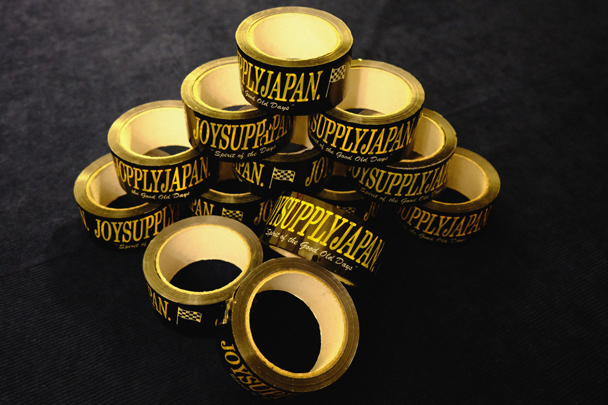

Drift Tape.
2020-present.
Initially intended to simply be packaging tape, these rolls quickly became a toolbox staple amongst drifters across the east coast. The super sticky adhesive and eye-catching design made this ideal for quick fixes on and off the track, especially for fibreglass body components.
I have lent into this inadvertent functionality and marketed it as such; drift tape.
More on this project: https://www.instagram.com/p/Co6eLCgyh0m/?img_index=1

Joy-Supply Drift Tape. Plastic, adhesive.